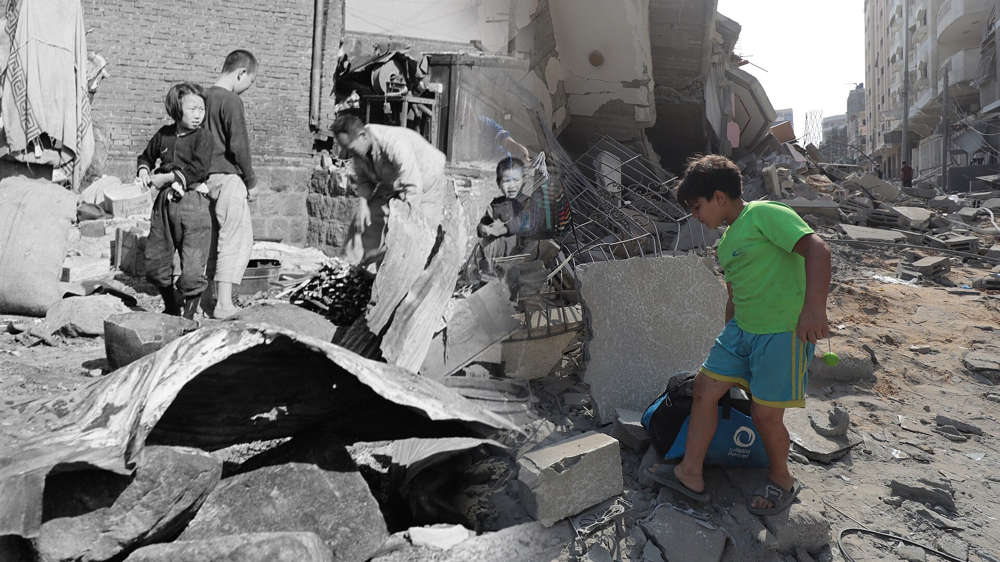
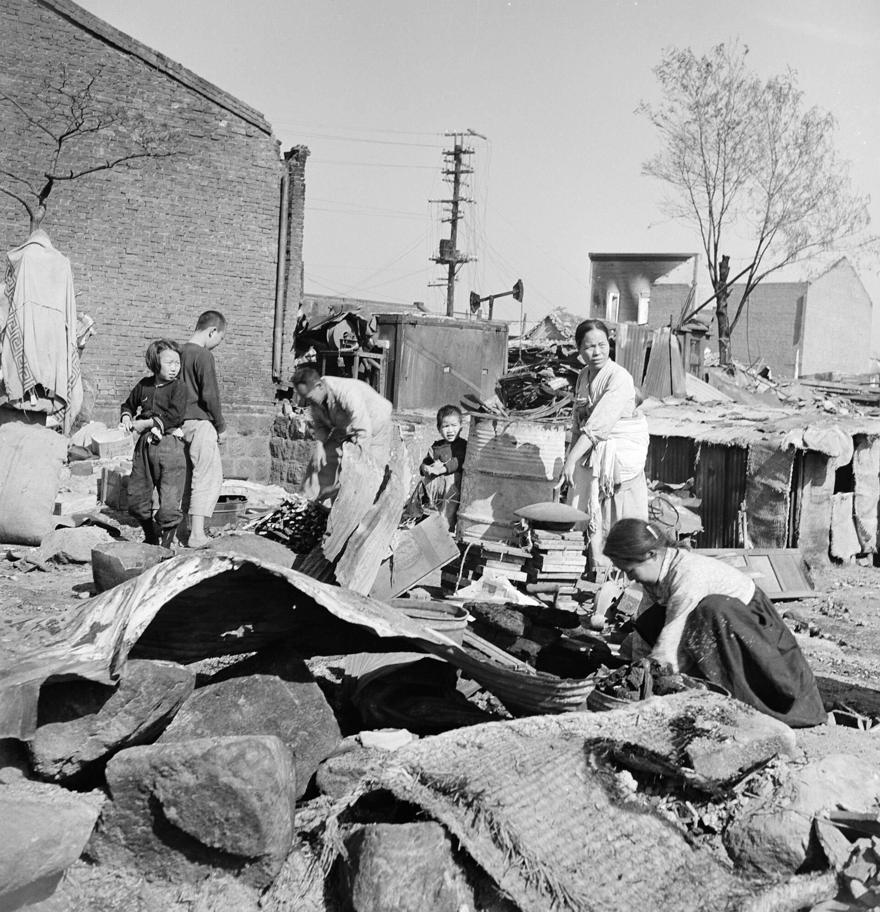
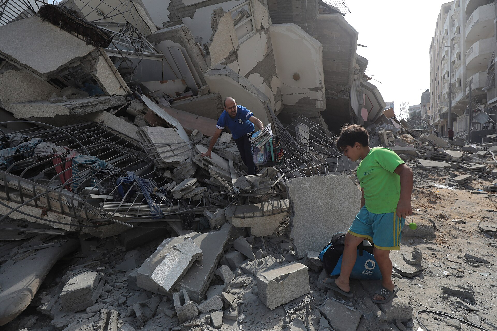
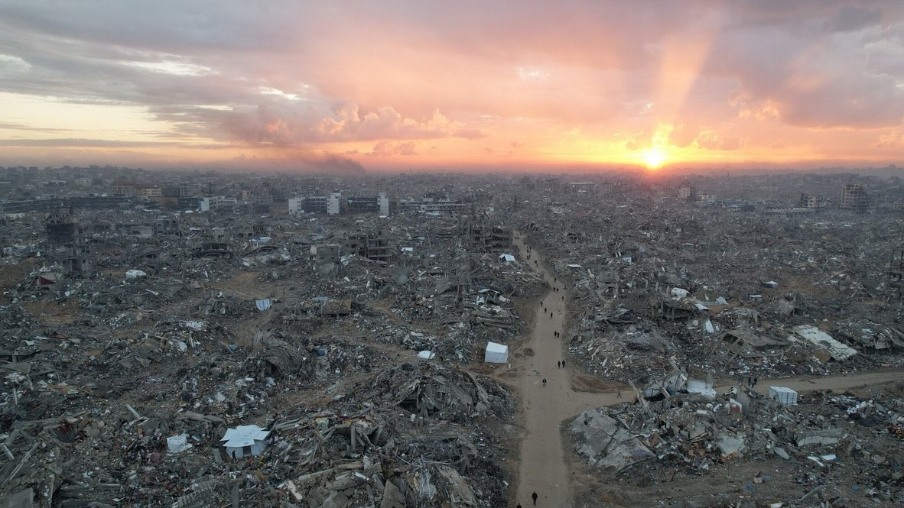
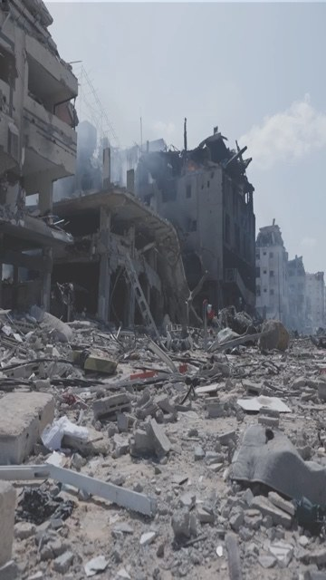

전체 기록
사진 클릭: 전체보기 · ← →: 이전/다음 · ESC: 닫기



사진: 대한민국 국가기록원 DTC0000011 · Public Domain / WAFA·APAimages · CC BY-SA 3.0
KOREA 1950–1953 · GAZA 2023–
설명보다 먼저, 실제 기록을 봅니다. 한국전쟁 당시의 피란과 폐허, 그리고 오늘 가자지구의 파괴와 삶을 한 화면에 모았습니다.
각 사진의 촬영 정보와 저작자·라이선스는 원문 기록을 기준으로 정리했습니다.
GAZA · 2023.10 – 2026
서울의 4분의 3 남짓한 땅에 약 210만 명이 살던 곳. 2년이 넘는 전쟁이 지나간 뒤, 유엔이 집계한 가자의 오늘입니다.
출처: OCHA, Reported Impact Snapshot – Gaza Strip (2026. 7. 15.) · IPC 기근 확인 보도 (2025. 8. 22.). 사상자 수는 가자 보건부 집계이며 유엔이 출처를 밝혀 인용한 수치입니다.

AERIAL · GAZA지평선 끝까지,
집이 있던 자리입니다.하늘에서 내려다본 가자 시내. 길 위의 작은 점들이 사람입니다.
주택 열 채 중 일곱 채 이상이
무너지거나 부서졌습니다.학교는 대피소가 되었고, 대피소는 다시 폭격을 맞았습니다.
그래도 사람들은
이 길을 걸어 집으로 돌아갑니다.1950년 겨울, 폐허가 된 서울로 돌아오던 우리의 할머니·할아버지처럼.

LIVE FOOTAGE00:00ON THE GROUND
무너진 건물 사이로 아직 연기가 피어오릅니다. 구조대가 잔해를 헤집는 동안, 아이들은 그 옆에서 쓸 만한 물건을 찾습니다. 1950년 서울의 골목에서 보던 장면이 2020년대에 그대로 반복되고 있습니다.
THEN & NOW
가운데 손잡이를 좌우로 밀어 보세요. 왼쪽은 1950년대 한국, 오른쪽은 지금의 가자입니다.

 1950 인천2025 누세이라트
1950 인천2025 누세이라트
 1951 한강2024 칸유니스
1951 한강2024 칸유니스
 1950 서울2024 자발리아
1950 서울2024 자발리아
 1950년대 서울2024 데이르알발라
1950년대 서울2024 데이르알발라사진 클릭: 전체보기 · ← →: 이전/다음 · ESC: 닫기
1950 → 2026
1950년의 한국은 전쟁고아와 피란민으로 가득한 세계 최빈국이었습니다. 그때 한국 아이들을 먹이고 가르친 것은 지구 반대편 누군가가 매달 보내 준 후원금이었습니다. 지금 우리가 아는 국제구호단체 상당수가 바로 한국전쟁을 계기로 시작되었습니다.
오늘날 초록우산(어린이재단)의 시작. 전쟁 전후의 고아들을 돌보았습니다.
전쟁이 터진 해, 아이들에게 분유·의약품·담요를 보내기 시작했습니다.
한국전쟁 고아들을 본 밥 피어스 목사가 세운 단체. 한국 아이 한 명과 후원자 한 명을 잇는 ‘결연’이 시작이었습니다.
에버렛 스완슨 목사가 한국전쟁 고아를 위해 시작한 1:1 정기후원 모델이 지금 전 세계로 이어지고 있습니다.
전쟁으로 가족을 잃은 아이들을 해외 후원자와 연결했습니다.
1945년 이후 약 50년간 해외 원조를 받으며 폐허에서 다시 일어섰습니다.
원조를 받던 나라가 원조를 주는 나라가 된, 세계에서 거의 유일한 이야기. 그 시작에는 이름 모를 정기후원자들의 한 달 한 달이 있었습니다.
참고: 한국경제, “한국은 해외에 100억달러 넘게 원조했죠” · 각 단체 공식 연혁.
WHY PEACE MAKER
구호단체가 현장에서 할 수 있는 일의 크기는 결국 ‘매달 꾸준히 들어오는 후원’의 크기로 정해집니다. 우리는 그 정기후원자를 거리에서, 한 사람씩, 대화로 만나는 사람들입니다.
검색하고 찾아오는 사람은 이미 마음이 있는 사람입니다. 우리는 아직 가자를, 구호를 생각해 본 적 없는 시민에게 먼저 말을 겁니다.
질문에 답하고, 걱정을 듣고, 현장의 맥락을 함께 나눕니다. 이해하고 시작한 후원은 오래갑니다.
우리의 목표는 일시 모금이 아니라 정기후원자입니다. 단체가 1년 뒤, 3년 뒤를 계획할 수 있게 만드는 힘입니다.
단체의 가치·윤리·사업을 배우고 거리에 섭니다. 시민이 처음 만나는 그 단체의 얼굴이 바로 우리입니다.
ONLY WITH MONTHLY DONORS
뉴스가 뜨거울 때 한 번 모이는 돈
매달 같은 날, 같은 마음으로 들어오는 돈
급수시설은 짓는 것보다 매달 운영·수리하는 데 더 오래 돈이 듭니다.
치료식은 몇 주에서 몇 달 이어져야 아이가 회복합니다. 중간에 끊기면 처음으로 돌아갑니다.
한 학기, 한 학년 단위로 이어져야 의미가 있는 일입니다.
재난이 터진 뒤 모금을 시작하면 늦습니다. 매달 쌓인 후원금이 첫 트럭을 출발시킵니다.
의사·교사·구호요원의 월급은 매달 나갑니다. 매달 들어오는 후원만이 그것을 지킵니다.
현장의 진실을 세상에 알리고 제도를 바꾸는 일은 몇 년의 꾸준함이 필요합니다.
WHY F2F
대면 모금(F2F)은 1997년 그린피스가 영국의 한 음악 페스티벌에서 처음 시도한 뒤, 전 세계 국제구호단체가 정기후원자를 만나는 핵심 채널이 되었습니다.
후원을 한 번도 해 본 적 없는 사람을 처음 후원자로 만드는 것은 대면 대화가 가장 잘하는 일입니다.
“내 돈이 정말 거기에 가나요?” 이 질문에 바로 그 자리에서 답할 수 있는 건 사람뿐입니다.
대면 모금은 처음부터 정기후원 약정으로 이어지도록 설계된 방식입니다.
시선·미소·열정으로 마음을 열고, 짧은 이야기와 진심으로 현장을 전합니다. 그 5분이 한 아이의 다음 1년이 됩니다.
1950년, 누군가 한 번도 본 적 없는 한국의 아이를 위해 매달 후원금을 보냈습니다.
오늘 거리에서 나누는 5분의 대화가
가자의 한 아이에게 다음 달의 한 끼가 됩니다.
WE ARE PEACE MAKERS